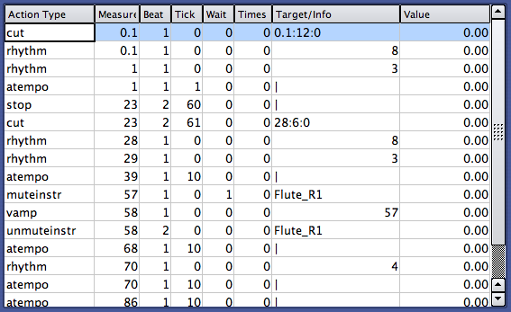
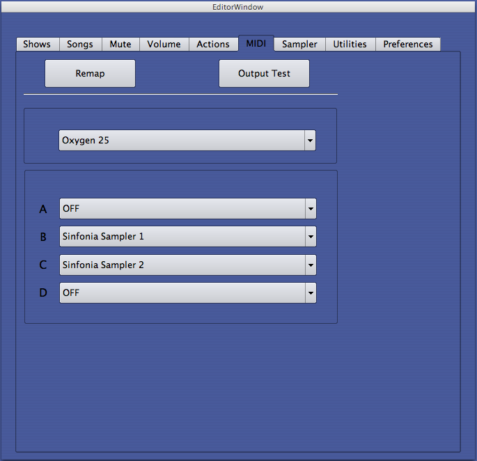
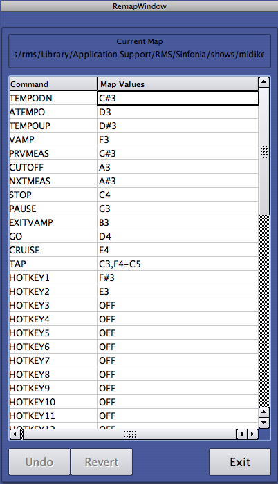
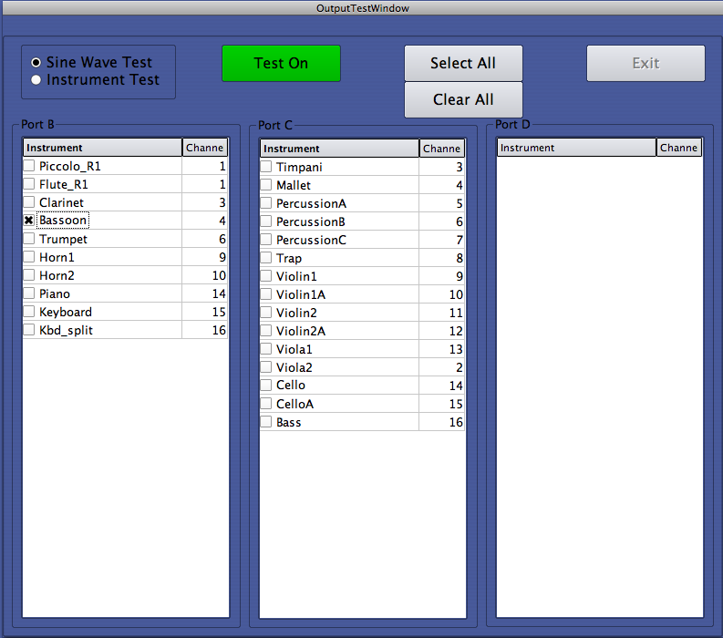
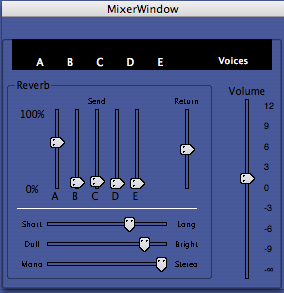
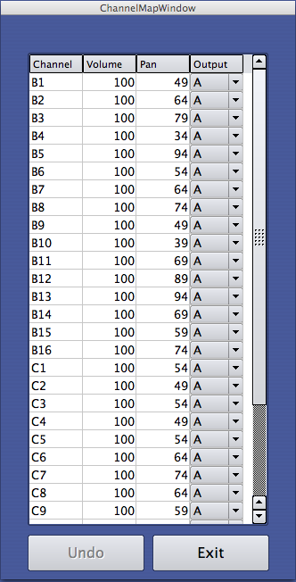

Advanced
Advanced Actions
The New button allows you to create any of Sinfonia®’s available Actions. As such, we also refer to it as the Advanced Editor. Here you can perform with a greater degree of precision almost any of the edits discussed previously. There are also additional miscellaneous commands. For special circumstances, the Advanced Editor allows very detailed and unique customization.
Sinfonia® uses its own programming language to understand the way a song should behave. There are commands that tell Sinfonia® how to navigate through a repeat or cut, which instruments to mute and when, which beat subdivision is to be played, etc. When changes are made in the other editing areas, these commands, which are called metaevents, are automatically written into the Sinfonia® show file. In fact, when you go to the Advanced Editor, you’ll see all the meta-events for a given song, including the ones that were written from any edits you may have made.
While different editing tasks involve different arguments and parameters, the commands, as meta-events, share a common syntax. The Advanced Editor lays out the syntax elements for you, so that the meta-event can be constructed in a consistent fashion. These syntax elements appear as separate fields above the central display box:

- Action Type
- Measure
- Beat
- Tick
- Wait
- Times
- Target
- Value
The basic command title (i.e. mute, repeat, cut). The individual actions will be explained in greater detail later in this section.
The measure where the action will occur. Lettered measures convert to decimals (12c = 12.3).
The beat where the action will occur. If this field is left blank, Sinfonia® will assume a value of 1 (or the first beat in the selected measure).
Each quarter note beat consists of 480 ticks. The tick number specifies where within the beat the action will occur. For example, an action that happens on the second sixteenth note of a quarter note beat would be placed at tick 120. If the tick field is left blank, Sinfonia® will assume a value of 0 (or the very start of the selected beat).
If actions are placed within a repeated section of music, the wait field allows you to specify a number of times to wait before performing the action. For example, if you repeat measures 10-20 three times, you can tell Sinfonia® to mute the flute the second time around by specifying a wait value of 1 (Sinfonia® waits one time before performing the action). If the wait value is 0 or left blank, Sinfonia® will assume you want the action to be performed every time. Be aware: if you specify a wait value other than 0 and your action is not placed within music that is repeated, the action will not be performed (Sinfonia® will be waiting for that second or third time around, which won’t happen if there are no repeats).
The times field tells Sinfonia® how many times to perform an action. After Sinfonia® has fulfilled its obligation and performed the action the specified number of times, it will ignore the metaevent on subsequent passes. The most common way to use this field is with repeat (i.e. repeat measures 10-20 three times). But there are other interesting ways to use it. For example, if measures 10-20 are repeated three times, and within this repeated section there are commands to mute the flute two times at measure 19 and unmute the flute at measure 20, Sinfonia® would play the flute at measure 19 on the third pass after skipping it the first two times. If the times number is 0 or is left blank, Sinfonia® will will perform the action every time it is encountered.
The target is the object of a given action. Targets vary according to action. For song navigation actions (cut, vamp, repeat, relocate, firstend, secondend) the target is the measure number where you will jump to when the action is performed. For show navigation actions (attacca, relseq), the target is the song to which you will relocate. For instrument actions (muteinstr, unmuteinstr, instrvolume) the target is the instrument you wish to manipulate. The targets are outlined with their corresponding action type below.
Value is used with the instrvolume metaevent. This should be a number expressed relative to 1 with two decimal points. The value 1 indicates an unchanged volume level (or 100% of the preprogrammed value). Any value above or below 1 instructs Sinfonia® to play a selected instrument relatively louder or softer. So for example, if an instrvolume action is added for the flute with a value of 1.25, Sinfonia® will play the flute 25% louder than the preprogrammed level.
Actions are created, edited and deleted in the same way as the other editing windows, although not all fields apply to each action type. Highlight an existing action in the central display box and click Edit Selection or Delete Selection to edit or delete. Pressing enter on the typewriter keyboard from within any of the data fields will advance you to the next field. Also, clicking on a selection anytime there is a dropdown box of choices will advance you to the next field. In addition, there are several actions (transpose, hotkeys, and preferences) which bring up their own pop-up dialog box.
When you click New, a box appears where you can select from all the available Actions:
- A Tempo
When Sinfonia® encounters an a tempo command, it will reset the tempo clock to the preprogrammed tempo. This can be useful if you want to perform an extreme ritardando section of music followed by an quick shift back to the original tempo. Without the a tempo action, Sinfonia® would take a few taps to realize your intentions and catch up. The atempo action allows you to give Sinfonia® a heads-up.
Leave target and value blank for a tempo events.
- Attacca
The attacca action allows you to segue between two songs without stopping. Usually this happens at the end of a given song such that the music flows from the end of one song into the beginning of the next song. However it’s possible to place attacca anywhere in a song and to segue into any song in the show. Place the attacca action at the point you wish to segue with the destination song as your target. The available choices will appear in a drop down list when you get to the target field.
Leave the value field blank on attacca events.
- Cut
The cut action is a relocate action, usually used to skip sections of music. Place the cut action at the desired jumping point with a target destination measure number. If you want to cut to a point mid-measure, enter the target as measure:beat:tick (for example, a cut to beat 2 of measure 4 would have 4:2:0 as the target.) Leave the value field blank.
- Cutoff
When Sinfonia® encounters a cutoff action, it will turn off all notes that are playing at the time. Leave the target and value fields blank for cutoff events.
- Hotkeys 1-36
Hotkeys can be programmed for specialized functionality. With hotkeys, you can trigger unique relocations, mutes, external sequences and more. For example, you can set up a hotkey to take you automatically to measure 37. Or you can set up a hotkey to trigger the muting (or unmuting) of the flute part. Furthermore, because you can redefine the hotkeys as you go through the music, the same hotkey can perform an unlimited number of functions.
In the hotkey pop-up window, select the hotkey Target Type: Instrument (to mute/unmute an instrument), Location (where the target is the measure or place mid- measure you would like to relocate to.), or Sequence (to trigger an external sequence). If None is selected, Sinfonia® will look for prospects in the following order: Instruments, Targets, Sequences. For example, if the hotkey target is defined as “triangle”. Sinfonia® will first look to see if there is an instrument by this name. If Sinfonia finds it, it will act on it accordingly. If Sinfonia® doesn’t, it will then look to see if a location target names “Triangle” exists. If so, Sinfonia® will immediately relocate there. If the location is not found, Sinfonia® will finally look for an external sequence named “Triangle” and trigger it if its there. If it still is not found, Sinfonia® will then give a message that the target is not valid.
To create an Instrument Hotkey, enter the name of the instrument you would like to affect in the Target field. If you are unsure of the name, you may use the Output Test feature (described later) to find the name you are looking for. Be careful when entering the name in this field: spelling and capitalization counts! Thus, if the instrument is named “Trumpet1” in the Output Test window, don’t enter “Trumpt” or “trumpet1”. Also note that some instrument names have an underscore, such as “AltoSax_R1”. This name must be entered exactly as it appears in the Output Test window.
For the “Hotkey Name” field, you may either enter a short name (under 10 characters) or you may leave this field blank. If you do enter a name, it will be displayed in the hotkeys window of the player if that preference is turned on (see “Preferences”.)
When the Hotkey is set to an instrument, hitting the hotkey will activate the opposite mute state (if the instrument is currently muted, the hotkey will unmute it, and vice- versa).
When the Hotkey is set to a Location, hitting the hotkey will cause Sinfonia® to jump to the target measure as soon as the hotkey is pressed. If you are in Play mode, the hotkey will also act as if you just pressed a play key on the downbeat of the target measure. (If you are in Stop or Go mode when you hit the hotkey, you will still stay in that mode at the target measure.)
Remember that the sequence needs to pass the hotkey definition before it will take effect. If a hotkey is defined at measure 20, hitting it at measure 10 will have no effect (or it will have the effect of a previous definition). Also remember to be careful with what you write down as a target: spelling counts!
On smaller Sinfonia® systems, only one hotkey (hotkey 1) is programmed on the MIDI keyboard. If you need or want more, see Remap, or contact RMS for assistance.
- Instrvolume
Instrvolume actions allow you to adjust the relative volumes of instruments over the course of a song. Place the instrvolume event at the desired location. A drop down list at the target field allows you to specify the instrument target. Here (at last), you get to use the value field. A decimal figure above 1 will make the instrument relatively louder. A decimal figure below 1 will make the instrument relatively softer. Thus a instrvolume with a flute target and a value of 1.20 will make the flute 20% louder, while a value of 0.80 will make the flute 20% softer.
Note: Volumes settings live within a range of 0-127. Therefore, there are limits to the amount you can increase volume. For example, if an instrument is preprogrammed at a volume level of 100, the most you will be able to increase it is 27% to get to the maximum volume of 127. In this case, attempting an increase greater than 27% will still result in just a 27% increase, since the setting has already reached its upper limit. Generally speaking, volume adjustments should be kept within a 15-20% range. If you feel you need to increase by a large percentage, consider lowering the other instruments instead, so the instrument in question stands out more.
- Muteinstr
A muteinstr action will mute a selected instrument. Place the muteinstr action at the desired location and select the target instrument from the drop down window at the target field. Leave the value field blank.
- Pause
- Pref
Sinfonia® will pause when it arrives at this action event. Forward motion of the song will stop, but whatever notes were playing when you arrived at the pause event will continue to play until you give Sinfonia® further instructions (like additional taps or a cut-off command from the piano or typewriter keyboard). Like Stop, the tempo clock will freeze so that Sinfonia® doesn’t think you have shifted to a very slow playing pattern. Pause events can be useful in musical fermatas or rubato passages.
Pause events do not have a target or a value. Leave these fields blank when creating pauses.
The ‘pref’ metaevent is used in conjunction with the preferences feature described in the next section. With the ‘pref’ metaevent, you can toggle a preference to its alternate state. If the preference is turned on, this action will turn it off, and vice verse. Note: when you arrive at a new song, the global state will be restored (unless another ‘pref’ event is programmed ).
- Relocate
- Relseq
The relocate command is the generic way to move around a song. Relocate can accomplish the same tasks as any of the other song navigation commands (cut, repeat, vamp, etc.) The placement of the relocate action denotes the spot from which Sinfonia® will jump to a new location. The target is the new measure to which Sinfonia® will jump.
Leave the value field blank on relocate events.
The relseq action allows you to go immediately and automatically to a new song from a specific point in the current song. When the relseq is performed, Sinfonia® will relocate to the selected song, stop and wait for further instructions (i.e. tap, go, etc.). Place the relseq action at the point you want to switch songs. The target will be the new song to which you wish to relocate. When creating or editing relseq actions, a drop down list of the various songs in the show will appear when you get to the target field. Click on your target choice.
Leave the value field blank on relseq events.
- Repeat
- Reset
Repeat events establish a new repeat. Like vamps, the repeat action occurs at the end point of the repeated section and the target is the beginning.
Leave the value field blank on vamp events.
Note the distinction between entering repeats (and vamps) in the Advanced Editor versus entering them from Repeat, Cut, Vamp editor window. In an effort to make the system more user-friendly, the Repeat, Cut, Vamp editor deals with repeats and vamps in a way that is more typically idiomatic to musicians. That is to say, it discusses repeats and vamps from the earlier measure forward. For example, a musician would usually say, “repeat measures 10 through 20” rather than “go from the beginning of measure 21 to the beginning of measure 10.” You can enter a repeat or vamp in the Repeat, Cut, Vamp editor using a more common parlance and Sinfonia® will convert it into a metaevent with the syntax it needs. However, the Advanced Editor, where more specialized repeats and vamps are created, requires the proper syntax upfront. Focus on where the action will actually occur. In the case of repeats and vamps, this is the endpoint of the repeated section of music.
For actions that have either wait or times arguments, the actions will stop functioning or will function differently based on the number of times Sinfonia® has passed. If you have a repeat to measure 10 that lives at measure 21 and it has a times of 2, than Sinfonia® will relocate to measure 10 the first two times it hits measure 21 and ignore the command on the third and subsequent times. A reset action will reset all the action counters to their original values. So if Sinfonia® encounters a reset action and then relocates to places where there are previously expired actions, Sinfonia® will perform these actions as if they are being passed for the first time.
Leave the target and value fields blank on reset events.
[For rehearsal purposes, hitting F9 on the Typewriter keyboard, or leaving and returning to the current song with the arrow keys (in the Player window) will also serve to reset all the action events.]
- Rhythm
The rhythm metaevent allows you to change the play beat subdivision. The target is the rhythm value choice. The options appear in a drop down list when you get to the target field. Leave the value field blank for rhythm events.
- Seq
The seq action is used to trigger a target external sequence. An external sequence is a little musical snippet that plays at a separate clock, outside of the meter and tempo controls of the primary sequence. An example might be a special drum fill or horn flourish. Most often these external sequences are triggered by hotkeys, so they can be cued in real time by a particular stage action. However, The ‘seq’ metaevent allows you to program them to occur at a specific location.
- Stop
- Transpose
When Sinfonia® arrives at a Stop action event, it will stop. Notes will cut off and the tempo clock will halt so that Sinfonia® will not think you are switching to an extremely slow play tempo (as it would if you simply stopped playing). A stop meta-event is equivalent to hitting stop on the piano or typewriter keyboard. This might be useful if you want Sinfonia® to stop at a specific spot for a bit of stage action.
Stop events do not have a target or value. Leave these fields blank when creating stops.
If you need to change the key of a song, you can do that by using the Transpose feature in the main Editor window. If you need to make a transposition only for part of a song, you can add a Transpose metaevent at the location where you want the transposition to begin. The transpose metaevent and the Editor’s transpose feature work cumulatively: a Transpose metaevent of -1 placed in a song with a transposition setting of -2 will result in the song being transposed a minor 3rd down from the original key at the location of the metaevent.
- Unmuteinstr
An unmuteinstr action will unmute a previously muted instrument. Place the unmuteinstr action at the desired location and select the target instrument from the drop down window at the target field. Leave the value field blank.
- Vamp
- Firstend
- Secondend
Vamp events establish a new vamp, or section of music that is repeated an indefinite number of times. The vamped music will repeat until the player tells Sinfonia® to exit the vamp. The vamp action is placed at the ending boundary of the vamped section of music and the target is the beginning. For example, if you wanted to add a new vamp of measures 1 through 4, you would place a vamp action at measure 5, beat 1, tick 0 (in other words – the place where measure 4 is completed, the barline to the right of m4). The target would then be 1 (for measure 1). The times value would be 0 or left blank since you would want the action to be performed indefinitely. (It is possible, though uncommon, that you might want a wait value – if for example this vamp fell within a larger repeated section of music).
Leave the value field blank on vamp events.
The firstend action, which is used in tandem with a corresponding secondend action, allows you to create repeated sections of music with different endings (Ending #1 and Ending #2). Get ready for a bit of a brain twister here: The firstend action is placed at the beginning of the first ending and its target is the beginning of the second ending. It’s equivalent to a relocate metaevent with a target that is the second ending start measure number and a wait value of 1 (it performs the action on the second pass). In this way, the firstend action defines the front boundary of the first ending.
Leave the wait and times field blank with firstend events; these mechanisms are already built into the command. Leave the value field blank on firstend events.
Please note - you cannot currently create new Firstend events, however you can duplicate the behavior using a series of Relocate events
The secondend action is used with the firstend action to establish a repeated section of music with two different endings. Place the secondend action at the end of the first ending for the repeated music (which is usually – though not always – also the beginning of the second ending) with a target that is the measure number for the repeated section of music.
Leave the wait and times field blank with secondend events; these mechanisms are already built into the command. Leave the value field blank on secondend events.
An example of firstend and secondend in practice: Lets say you wanted to repeat measures 10-20 with a first ending at measure 19 and a second ending at measure 21. You would create two events:
| Action Type |
Measure |
Beat |
Tick |
Wait |
Times |
Target |
Value |
| firstend |
19 |
1 |
0 |
21 |
|||
| secondend |
21 |
1 |
0 |
10 |
Please note - you cannot currently create new Secondend events, however you can duplicate the behavior using a series of Relocate events.
Clickon and clickoff are not currently supported.
The MIDI Tab

From the MIDI Tab, you can select your MIDI input and output port assignments, remap your MIDI Keyboard and perform the Output Test.
MIDI Input/Output Ports
The Input Port should be set to your MIDI controller keyboard (Oxygen8 or Oxygen25 in most cases). Output ports will vary depending on show. For most Orchextra and InstrumentalEase productions, only Ports B & C are used, set to Sinfonia Sampler 1 and Sinfonia Sampler 2 respectively.
Remap
The Remap menu allows you to specify individual key placement on your MIDI keyboard. If you would like to set up your keyboard differently than the preset, you can do that. Or if you would like to use a larger keyboard with trigger keys in different places, you would do that here as well.

You will see in the Remap Window a list of the possible trigger keys (such as STOP, PLAY, TAP, GO, etc) and what they are assigned to. Please note, the Remap Window uses the European number values - so "middle C" is assigned to C4.
To reassign a key, click on the "Map Value" next to the specific trigger you would like to reassign, and play the desire key on your MIDI keyboard. If a value is already assigned to a particular note, then playing that note will "un-assign" it. So for example, if you would like to set "Pause" to G4 instead of G3, you would click on the Map Value next to "Pause", play G3 (to turn it off) and then play G4. In addition, if a note is currently assigned somewhere else, then it will be removed from that other location when you assign it. This way, any note can only have a single assignment at any given time.
If you would like to assign a range of notes to a specific trigger, then you assign them by playing every note within that range (as if you were playing a chromatic scale).
Pressing "Undo" will undo the last assignment you have made.
Pressing "Revert" will assign every trigger to its default value.
Output Test
The Output Test is a diagnostic that helps you check and confirm MIDI data and audio signal on the individual instrument channels. It should be performed before every performance will enough in advance to address potential problems (at least one hour before house-open).

There are two basic modes to the Output Test:
- Sine Wave
With the Sine Wave Test,, a 1k 0vu sine wave (this is the standard "test tone" used in pro audio) will be generated by those sound modules which are capable of sending this signal. It can be particularly useful when calibrating levels at the mixing board. - Instrument Test
With the Instrument Test, a short pattern will be continuously played using the default sound of each instrument track. This test can help isolate a misbehaving instrument and perhaps track down the problem to something like a disconnected cable.
You will notice that the instruments are grouped into columns by the ports used: B, C, D, etc. These ports correspond with the MIDI ports used by the sound module or modules in your Sinfonia system. You will see as many ports as are utilized by the underlying content, up to 8 (Ports A-H). The Channel displayed corresponds with the MIDI channel number used by that instrument on that Port.
To use the Output Test, do the following:
- Make sure all SInfonia and house sound components are powered on.
- From the MIDI Tab, click the [Output Test] button.
You will be taken to the Output Test screen. - Select the test mode you want: "Sine Wave" or "Instrument Test".
Modes are located in the upper left portion of the screen - Click the red [Test Off] button.
It will turn green and read "Test On". - Click an Instrument checkbox to activate it for the test.
You can select multiple instruments simultaneously. Depending on the mode you are in, it will either send a Sine Wave out the selected channel(s) or a small musical snippet. Click the [Select All] button to quickly select all available instruments. - Single click any active channels to deselect.
You can also click the [Clear All] button to quickly deselect all active channels. - After checking all channels, click the [Test on] button.
The button will toggle back to a red [Test Off]. - Click [Exit Test] to return to the Editor screen.
Troubleshooting HInt: If you turn on the Output Test and are not seeing or hearing Sinfonia in your house sound system, plug a pair of headphones into the headphone jack of the main Sinfonia sound module. If you hear the Output test in your headphones, the problem you are having is most likely not with Sinfonia.
If a particular instrument family (such as all the strings) seems to be missing, the problem is most likely due to a loose or disconnected audio or MIDI cable. Use the Output Test to determine which Port or Channels are affected and recheck your connections!
The Sampler Tab
The Sampler Tab of the Editor consists of three items:
- Enable Sampler checkbox
This should be check when using RMSSampler - Show Mixer Window checkbox
Check this box to display the floating Mixer Window in the Player. See below for more information - Channel Map editor button
This button takes you to the Channel Map editor, from which you can set the routing and panning information for the Firewire/Profire audio break-out box. See below for more information.
Mixer Window
The floating Mixer Window (that appears in RMSSampler based Sinfonia systems if the "Show Mixer Window" is checked) allows you to set overall volume setting, set reverb settings for the various routing pairs on the Firewire 410, and monitor activity on the outputs.

You can think of the Float Mixer Window as divided into three sections:
- Master Volume
On the right side of the Window is a large Volume slider. In most instances, it is best to keep this in the middle '0' value. This is the nominal setting that provides the truest sampler playback without distortion. However, if your theater has unique acoustics or sound design issues, you can increase or decrease the global volume of all the Sinfonia samples with this setting. Note: This adjustment is different from edits you may perform with the Instrument Volume editor. Here you are adjusting the samples themselves, whereas in the Instrument Volume editor, you are adjusting the MIDI files that trigger these samples. Be careful of too much adjustment here as it can cause distortion. - Reverb
The majority of the window is taken up by the various RMSSampler reverb that is sent from these five output pairs. Next to this is a vertical slider that controls the single return value. All reverb data is piped through the A output pair. Depending on your theater's sound system, you can get very creative and specific with the way you treat reverb in the mix. For example, you might want to isolate reverb so you can mix it separately from the dry instruments. Or you may decide to give more reverb to the strings and less to the percussion, etc. See the Channel Map section to learn more about how to customize your routing.
The horizontal sliders allow you to change the character of the reverb - length of decay, amount of brightness, size of stereo spread. Experiment to find the right settings for your Theatre and tastes.
Note: depending on your settings, the Reverb may add volume to your overall mix. Also note: try to be careful to only apply reverb to the outputs you are actually using. Otherwise, you will tax the Computer unnecessarily. - Monitor
The top portion of the screen provides visual feedback of what Output Ports are in use. This will help you confirm or troubleshoot any adjustments you might make with the Channel Map editor.
Final note: We find that the Mixer Window is an important feature to have regular access to during rehearsal and tech. But once the settings have been determined, people generally want these to be locked in place and not change again. Therefore, we suggest turning off the Floating Mixer before performances begin. This will free up additional Player screen real-estate - and more importantly, prevent the accidental changing of mixer settings during the run.
Channel Map Editor

The Channel Map editor (accessed from the 'Channel Map' button in the 'Sample' tab) allows you to customize the routing of the RMSSampler to the Firewire/Profire audio breakout box.
When you arrive at the Channel Map editor, you will see the 32 channels of the RMSSampler (B1-16 & C1-16) displayed with four columns of information.
- Channel
The is the specific port for that particular row. To see what instruments correspond to what ports, you can open up the Output Test Window simultaneously to cross-reference. - Volume
This value defaults to 100 for each channel, and shouldn't be changed unless you are directed to do so by RMS staff. If you need to make changes to the general volume of individual instruments, you should use the Volume Tab.
- Output
The Output option is a fairly straightforward concept. Clicking on the pop-up menu allows you to select one of the five available stereo out pairs on the Firewire/Profire. "A" corresponds to line out 1 & 2, "B" to 3 & 4, "C" to 5 & 6, "D" to 7 & 8, and "E" to the coaxial S/PDIF port. - Pan
Panning allows you to adjust where in the stereo spectrum each RMSSampler channel will land on its assigned output pairing. It's expressed as a value between 0 (hard left) and 127 (hard right). Use hard panning to route an instrument exclusively to a specific port for individual mixing at the Theatre's mixing board. Or for more general use, simply modify the various instruments to create a natural spread across the stereo field.
After you have made all of your panning and output assignments, click the "Exit" button. Your changes will automatically save.
If you are unsure about which instruments are on which channels, you can go to the 'Output Test' (accessed from the 'MIDI' tab of the Editor) to see how everything lays out.
Give careful thought to how you can make best use of your Theatre's sound system and the available Sinfonia channels. You might, for example, want to group instrument families together, so that brass can be mixed separately from strings. Or you might want to group low pitched instruments separately from high, so that you can feed these to an external subwoofer. As mentioned in the Reverb section, you might decide it's worthwhile to separate the reverb (which always routes to output A) from the dry instruments. Be creative, and you can maximize the sonic impact of Sinfonia.
Utilities
The utilites are a series of scripts used to perform a few maintainance tasks within Sinfonia. Two of them will be of great interest to the user:
- Backup Sinfonia Show
- Restore Sinfonia Show
It is highly recommended that every production use these utilities regularly to back up your show data, particularly if you have made a large number of edits.
Backing up your Sinfonia show
The following steps will back up a duplicate copy of your current Sinfonia show edits to a USB stick. You can use the stick provided with the system, or your own.
- Select "Backup Sinfonia Show-2_2u.app" from the drop-down menu and click run. You will be presented with a welcome screen.
- Plug in the USB memory stick into one of the spare USB ports on the number pad attached to your computer and click "OK"
- Select the show you would like to back up and click "OK". There will usually only be a single choice.
- Select the name of the USB stick and click "OK". The provided RMS USB memory stick will be called "NONAME".
- Enter a unique name for your backup file and click "OK". Sinfonia will automatically append the name of the show to the file, so typing in something with the current date will suffice (i.e. 120110backup is good, representing a backup made on 12/01/10). Please use only consecutive numbers and letters, with no special characters.
- Sinfonia will now backup your files and unmount the USB drive.
Keep the USB drive in a safe place where you can always find it, since you never know what might happen!
Restoring your Sinfonia show
If the unthinkable has happened and you have somehow corrupted your show files, you are going to be awfully glad when you can restore the previous night's edits using the USB stick. To restore a show, use the following steps:
- Select "Restore Sinfonia Show-2_1u.app" from the drop-down menu and hit "OK"
- Plug in the USB stick to a spare USB port on the keypad and click "OK".
- Select your USB device from the list and click "OK". The provided RMS USB memory stick will be called "NONAME"
- Select the backup file you would like to restore and click "OK"
- Sinfonia will now restore your show files and unmount the USB drive. You can continue making edits from the point of your last backup, taking care to not perform whatever steps corrupted your show files in the first place!
If you have any questions or need any assistance, don't hesitate to call RMS at (212) 620-0664.
The other scripts are for use by RMS, and you shouldn't run them unless directed to do so by the RMS staff.
Preferences
Preferences are global features that alter the way Sinfonia behaves. They are mostly for advanced users involved with the underlying content development. The ones that are most likely to come in handy for general use are as follows:
- show hotkeys in player
When this is checked, you will see a grid appear in the player window. When a hotkey is activated, its name (if it was given a name in the Hotkey Name field) will appear in this grid. - black background for player
This changes the player screen from blue to black (useful in those situations when the lighting designer complains about Sinfonia's glowing blue monitors.) - check for rhythms that cross measure boundaries [validatetap]
This is an error check preference that will warn you when an established Play rhythm does not fall cleanly within measure boundaries. For example, if this preference is checked, and you attempt to put a dotted half note rhythm at beat one of a 4/4 bar without first putting a quarter note or lesser value at beat 4, you will get an error message. (In this scenario, the second dotted half that would fall on beat 4 crosses the bar line.) You will keep getting error messages when you program additional rhythms until you fix the problem. If you plan on doing a lot of specialized rhythm programming, this can be a useful tool.
Following are brief explanations of the other preferences, which should only be used under instructions from the content developers.
- disable CC64 reset on a new song [relseqnochase]
Sinfonia normally resetc CC64 whenever there is any kind of relocate - whether within a song or between one song and another. With this option checked, Sinfonia will keep any CC64-on events active through a segue. The CC64 events will remain on until a CC64-off event is encountered in the corresponding track of the subsequent song. - disable CC64 reset on intra-song relocate [relocatenochase]
Similar to the item above, but for use in intra-song relocates (i.e. cuts, repeats, vamps). - enable hotkey before playback of new song [autohotkey]
With this preference checked, any hotkey that is defined at the very first tick of a song will be active as soon as the song loads. You will not need to first play through the definition. - avoid multiple articulations on hotkey relocates [hotkeydeflam]
With this preference checked, if on a given channel, the same note occurs at both the jumping point and the hotkey target location, the second note will not play - ignore hotkey when near relocate target [hotkeytargetguard]
With this preference checked, if a location hotkey is triggered within a fraction of a second near its own target, the hotkey will be ignored. This is generally only necessary if 'avoid multiple articulations on hotkey relocates' is also engaged.
For each preference, the work between the brackets - relseqnochase, relocatenochase, etc. - is the metaevent label for that preference. Use the corresponding term as your target when creating pref meta-events to temporarily turn on or off a preference. See the Advanced Editor for details.